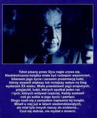

Posłowie zamieszczone w książce „Zsyp ze śmietnika pamięci”

Tekst pisany przez Ojca nagle urywa się. Niedokończona książka miała być rodzajem wspomnień, bilansem jego życia i zarazem prezentacją ludzi, którzy wywarli większy lub mniejszy wpływ na bieg wydarzeń XX wieku. Miała przedstawić jego znajomych, przyjaciół, ludzi, których spotkał jeden raz i tych, których widywał częściej. Każdy zostawił coś po sobie w jego życiu i pamięci. Długo nosił się z zamysłem napisania tej książki. Mówił o niej już w latach siedemdziesiątych, ale miał tyle innych rzeczy do zrobienia... Czuł się dobrze, nie myślał o śmierci. O swym planowanym nowym zamiarze wspominł: napiszę "Życiorys podany do wierzenia". Opowiem o swoich spotkaniach z Ho Chi Minhem, Maose-tungiem, Nehru, Indirą Gandhi, Margaret Thatcher, Michaiłem Gorbaczowem, Johnem Kennedym... Znał wielkich pisarzy, aktorów. Długo korespondował z Michele Morgan, która chciała mu pomóc zostać w Paryżu w 1949 roku. Podczas swej podróży do USA poznał Audrey Hepburn, Franka Sinatrę. Spotykał się z Grahamem Green'em, Francisem Cliffordem. Mówił: z pewnością moje wrażenia z tych spotkań, narysowane przeze mnie ich portrety będą inne niż to, co przywykliśmy czytać w kolorowej prasie lub książkach. Pokażę ich nie posągowo, ale jako zwykłych ludzi, takich, z jakimi ja się spotykałem.Tekst, który zdążył napisać, jest - tak jak zwykle u Ojca - przewrotny. Choć nie każdy odbierał jego przewrotność właściwie. Jak zwykle to u ludzi bywa, część przyjmowała go dosłownie.Był dobrym obserwatorem, swoją wizją lubił prowokować. Nie zawsze było to jednoznaczne z utożsamianiem się z przedstawianymi opiniami. Nigdy nie biegł w stadzie. Wyśmiewał stadne zachowania. Był szydercą. Indywidualistą. Zawsze z dystansu patrzył na innych. Mógł ten dystans zachować, bo był w grupie tych nielicznych twórców (pisarzy), którzy nie mieli ciepłych posad. Nie pracował w redakcjach, ale z nimi współpracował, przynosząc swoje teksty. Stało to się możliwe, kiedy osiągnął sławę i popularność. Był okres - wspomina o tym w tekście - kiedy żył głównie ze spotkań autorskich. JeĽdził po Polsce z odczytami. Zawsze dobrze się porozumiwał z czytelnikami i szybko nawiązywał nić sympatii z widownią. Miał taki dar.
Lubił posługiwać się groteską. Przewrotność jego w przypadku tej niedokończonej książki polega na tym, że nie odrzuca całkowicie komuny i tego, co się za jej trwania udało zrobić w Polsce dobrego. Przedstawia wydarzenia tego okresu, tak jak je zapamiętał, tak jak na nie wtedy patrzył. Może to spokojnie robić, gdyż za czasów trwania tejże komuny udało mu się utrzymać w miarę niezależną pozycję, o czym decydowała jego bezpartyjność, katolicyzm, brak stałej posady. Zawsze był sobą. Nigdy się nie zapierał swoich przekonań. Jedynym okresem, kiedy musiał wychodzić codziennie do pracy i siadywać za biurkiem, był okres pobytu na placówce w Indiach. Epizod, do którego nie doszedł w swoich wspomnieniach. Były to lata pierwszej odwilży po okresie stalinowskim, rozpoczęte w 1956 roku, kiedy Władysław Gomułka został pierwszym sekretarzem KC. Po 1956. (do 1959.) był attaché kulturalnym w Delhi. Ojciec kochał Azję, zachwycił się nią. Widać to po opisach Wietnamu, Chin, Indii, Laosu, Tybetu czy Tajlandii. Żałuję, że nie udało się pociągnąć jego wspomnień dalej, choć zawsze można zajrzeć do Wędrówek z moim Guru czy Kamiennych tablic. Doświadczenia dyplomatycznego nie chciał już powtórzyć. MSZ proponował mu ataszat w Rzymie, w kilka lat po Delhi - odmówił. Nie wiem, czy Azja by go nie pociągała bardziej... Dla MSZ Rzym stanowił nobilitację.
To, że ojciec nie "wychodził codziennie do pracy", tylko pracował w domu, stukając na swej maszynie, czytając książki i artykuły, słowem jego stała obecność spowodowała, że był bardziej zaangażowany w moje wychowanie. Byliśmy sobie bardzo bliscy. Jak byłam dzieckiem chodziliśmy razem do zoo, jak urosłam -- do muzeów, do kina, na spacery. Gdy nadchodziły wakacje -- przygotowywał mi lektury do czytania. Bardzo często mieliśmy inne zdanie, często nasze dyskusje przypominały kłótnie. Mama o tym mówiła "dwa barany" - byliśmy spod tego samego znaku zodiaku. Ale właśnie tego mu brakowało, jak wyjeżdżałam gdzieś na dłużej albo on wyjeżdżał. Po studiach rodzice kupili mi mieszkanie. Wyprowadziłam się na swoje, ale niedaleko, bo mój blok był na tej samej ulicy, tak że nadal widywaliśmy się codziennie.
Na bieżąco czytałam jego teksty. Z Mamą byłyśmy zawsze pierwszymi czytelniczkami i zarazem krytykami. Liczył się z naszą opinią. Przepisywał każdy tekst trzykrotnie, cyzelując do perfekcji każde zdanie, każde słowo. Ten niedokończony tekst nie przeszedł przez podobny szlif, stanowi jedynie pierwszy rzut myśli na papier, co decyduje o jego swoistej unikalności. Jak zaczęłam pracować naukowo i pisać własne artykuły, każdy uważnie czytał, komentował i wprowadzał uwagi. Dużo czasu spędzaliśmy razem, zadawał wiele pytań o współczesne wydarzenia, związane bardziej z moją specjalnością niż jego. Pytał o sprawy ekonomiczne, o politykę, o stosunki międzynarodowe. Był ciekawy nowości i świata.
Był bardzo dobrym człowiekiem. Po jego śmierci poszłam do ZLP na wieczór wspomnień o nim. Słyszałam ludzi, z których wielu nie znałam wcześniej, którzy wspominali jak Ojciec im pomógł. Były to różne sprawy -- od załatwienia szpitala na operację i dzwonienia do "delikwenta" po zabiegu chirurgicznym z pytaniem jak się czuje, po zamieszczenie recenzji z prac młodych twórców i pomocy w przyjeĽdzie do Warszawy. Słuchając tych ludzkich historii - wzruszyłam się. Padła nawet propozycja spisania tych wspomnień i wydania ich, gdyż stanowiłyby swoistą ilustrację czasów i pokazywałyby, że Ojciec poza swoją twórczością i poza domem, był człowiekiem czułym na problemy innych, że miał dla innych, często obcych ludzi, zawsze czas. Pomyśleć, że gdyby nie zajmował się tymi sprawami, może mielibyśmy tekst tej książki w całości. Może mielibyśmy więcej jego książek na półce. Miał jednak inne priorytety i tym zjednywał sobie ludzi, choć u wielu budził zawiść, zazdrość i krytykę. Inicjatywa publikacji wspomnień umarła śmiercią naturalną, bo brakło kogoś, kto by się za to zabrał. Tak jak to często u nas... Wszystko kończy się na słomianym ogniu...
W dniu pogrzebu moja przyjaciółka z czasu studiów Danusia Ziernicka (dyrektor administracyjny na Wawelu), zamawiając szarfę z napisem do wieńca, głośno zastanawiała się odpowiadając na pytanie pani w kwiaciarni, która chciała pomóc w sformułowaniu napisu: kim zmarły był dla pani? No właśnie, powiedziała Danka z zadumą, kim był? Nie był ojcem, choć był jak ojciec. Nie był krewnym, choć był jak krewny... Danka mieszkała u nas po studiach i była u nas zameldowana, co pozwoliło jej uzyskać pracę w Warszawie. Rodzice zawsze nas dwie przedstawiali: oto nasze córki, z czego jedna jest prawdziwa. Goście odgadując, która to z nas jest prawdziwa, a która przysposobiona, zawsze wskazywali na Dankę, mówiąc: To ta, taka podobna do małżonki pana". W domu często bywała też Grażyna Górska, trzecia z naszej grupy studenckiej. Dziś znana tłumaczka prac naukowych z angielskiego. I ona była podawana za córkę rodziców. W ogóle rodzice akceptowali moich znajomych, których sporo przetaczało się przez dom. Ojciec widząc ich zawsze zagadał, opowiedział coś z bieżących wydarzeń politycznych (lata siedemdziesiąte), rzucił dowcipem, a było tego sporo w tym okresie. Zwłaszcza cięta była satyra polityczna. Mama na ogół nas - wiecznie niedożywioną i niewyspaną młodzież - dokarmiała. Przygotowywała kanapki. Dawała ciasto. Zapraszała na obiad.
W latach siedemdziesiątych, kiedy nastał Gierek, ojcu stuknął piąty krzyżyk. Był w pełni aktywny. Został posłem z Katowic. Siedział w Sejmie na ostatniej ławce dla bezpartyjnych. Obok Osmańczyka i posłów ze Znaku. Załatwił dla pisarzy kilka ważnych rzeczy: m.in. emeryturę. Wcześniej twórcy nie byli objęci systemem emerytalnym. Znał języki (francuski, angielski i rosyjski). Języki znała Dąbrowska (studiowała w Szwajcarii, była też tłumaczką), znał je Iwaszkiewicz. Jednak niewielu pisarzy porozumiewało się bez tłumacza i mogło wystąpić na międzynarodowym forum. Często w tym czasie jeĽdził za granicę. Tak jak zwykle nie biegał w stadzie. W odróżnieniu od innych twórców nie był w świcie Gierka ani wcześniejszych i późniejszych po nim pierwszych sekretarzy. Nie brał stypendiów. Nie wykorzystywał okoliczności, jakie stworzyła era Gierka. Nie umiał tego robić bądĽ nie chciał... I tu był inny i tu nie kierował się stadnym odruchem. Miał swoich czytelników, miał wyborców. Z jednymi i drugimi często się spotykał. Dużo w tym czasie pisał, chociaż praca społeczna pochłaniała mu coraz więcej czasu. Regularnie dostarczał felietony do miesięcznika Widnokręgi i recenzje do Nowych Książek (kierowanych przez Zenię Macużankę). Zbiory tych recenzji (właściwie esejów o autorach) ukazały się w dwóch tomach Karambole. Felietony literackie, W głębi zwierciadła. Gawędy o pisarzach i książkach.
Pod koniec lat osiemdziesiątych wraca do prozy dla dzieci. Nikt już nie wierzył, że spełni obietnicę i pociągnie dalej opowieści o bohaterach Porwania w Tiuturlistanie, co zapowiedział przy pierwszym wydaniu tej książki w 1947 roku. Po kilkunastu wznowieniach przestano zamieszczać informację Do zobaczenia na Tronie w Blabonie. A jednak książka ta ukazała się w 1987. Jak różny jest język obu tomów, analizując go można pokazać ewolucję naszej mowy. Nie będę pisać o przygodach Kaprala Pypcia, Lisicy Chytraski i Kota Mysibrata, powiem tylko: Jak intrygująco i wieloznacznie brzmi określenie "ludzie czystych rąk" (chodzi o łaziebnych, którzy często myją ręce podczas pracy). Jakie to dziś aktualne.
Ojciec czytał swoich kolegów, w odróżnieniu od wielu z nich, którzy nie czytali jego i chyba w ogóle nie czytali nic poza tym, co sami napisali. Kiedyś mój profesor Stanisław Ładyka powiedział o naukowcach: dzielą się na tych, co piszą, i na tych co czytają. Ci, co czytają, dzielą się na czytających swoje teksty i czytających teksty innych. Okazuje się, że ta prawda nie odnosi się tylko do uczonych. Przekonałam się o tym we wspomnieniach drukowanych po śmierci Ojca. Dowiedziałam się z nich, że był ambasadorem w Wietnamie i Indiach, że Kamienne tablice działy się na Bliskim Wschodzie, nie wspominając przyjaźni z Moczarem, którego w ogóle nie znał. To trzy przykłady największych przekłamań, jakie znalazłam we wspomnieniach o nim, a było tego więcej...
Czytałam wspomnienia Magdy Dygatówny o jej ojcu. Myślałam, jakże inne były nasze domy... A nasze życie zaczynało się obok siebie. Byłyśmy sąsiadkami. Ja jeszcze w wózku, a ona już chodziła. Myśmy mieszkali na parterze, a ona ze swymi rodzicami na pierwszym piętrze. Wrocław... W domu zawsze się mówiło o tym żartobliwie: ojciec zaludniał Ziemie Odzyskane, ale mu to najlepiej nie wyszło. Efektem byłam tylko ja...
Jako dziecko długo wstydziłam się, że mój dom odbiegał od schematu polskiej rodziny, u mnie matka i ojciec byli cały czas w domu. Sprawą wstydliwą dla mnie pozostawało to, że on pisał i ludzie rozmawiali o jego książkach. Któregoś lata przeczytałam kilka powieści i zbiorków opowiadań i okazało się, że są bardzo dobre, że to się czyta i że się różnią od tego, co piszą inni autorzy. Długo bałam się konfrontacji z tymi książkami i podświadomie odsuwałam moment ich przeczytania. Bałam się, że się do nich zrażę, tak jak zraziło mnie przedtem wielu polskich autorów. Próba wypadła dobrze. Każda z ojca książek jest inna. Nie wykorzystywał raz wymyślonej konstrukcji czy formuły. Był typowym harcownikiem, którego trudno zaklasyfikować i wsadzić do jednej szufladki. Pisał dla dzieci. Pisał opowiadania. Pisał powieści. Zaczynał od poezji. Krytyka nie bardzo wiedziała, do jakiej kategorii literackiej go zaliczyć. Pierwsza jego książka -- Z kraju milczenia - przyjęta była entuzjastycznie. W okresie socrealizmu napisał Mądre zioła i Córeczkę, obie tak inne od tego -- co wychodziło spod piór jego kolegów. Kamienne tablice - pierwsza w Polsce antystalinowska powieść, spotkały się z ciszą krytyków. Nabrali wody w usta, choć prywatnie każdy mu kadził. Nie bardzo wiedzieli, jak zareagować na to, co tam było opisane.
Decyzję o jej wydaniu podejmowano długo. W końcu zadecydował o tym sam Gomułka. Duży udział w wydaniu książki miał przyjaciel ojca z czasu pobytu w Indiach (wówczas młody dziennikarz PAP, potem członek KC) Ryszard Frelek, który w tym czasie był sekretarzem Kliszki. I tak od nitki do kłębka.
Książka miała 13 wydań. Była najpoczytniejszą po 1945 r. Mimo okresowej przerwy we wznowieniach, spowodowanych protestem ambasady węgierskiej po jej pierwszym wydaniu. Po jakimś czasie uznano, że tylko węgierski patriota mógł tak pięknie napisać o 1956. w Budapeszcie. Takie są koleje losu, ale to nic nowego. Na różnych etapach różnie interpretujemy różne rzeczy. Po latach wróciłam do lektury Tablic. Czytałam je po Unberable Lightness of beeing (Nieznośna lekkość życia) Kundery, który pisał tam o 1968 roku w Pradze. Książka Kundery stała się bestsellerem światowym. Zrobiono z niej film w Hollywoodzie. Kundera jednak wyjechał. Żukrowski był w Polsce i zawsze do niej wracał. Myślałam: jakim bestsellerem byłyby Kamienne tablice gdyby tylko przetłumaczyć je na jakiś ludzki język. Miały one kilka tłumaczeń, ale wszystkie były językami egzotycznymi. Oprócz jednego: w latach dziewięćdziesiątych Tablice wydano po rosyjsku. Był to szok kulturowy w dobie pieriestrojki i głasnosti. Wcześniej przygotowane przez Helenkę Stachovą (córkę wspominanej przez Ojca Heleny Teigovej, też tłumaczki) wydano w Czechosłowacji. Tam książka po wydaniu przez kilka lat zatrzymana była w magazynie przez cenzurę. Po decyzji jej sprzedaży okazało się, że nie ma już co sprzedawać. Cały nakład zniknął z magazynów, wynoszony po jednym, dwóch egzemplarzach przez magazynierów i inne osoby, mające do niego dostęp. Ludziska szybko zwęszyli dobrą lekturę, a były to czasy, kiedy wszyscy byli żądni dobrej książki.
Kamienne tablice chciał filmować Andrzej Wajda. Temat go zafrapował, tak jak kiedyś Lotna, na jej plan jeĽdziłam z ojcem podczas kręcenia. Pamiętam dramat, kiedy koń nabił się na lancę wystającą z piasku, która wypadła jednemu z jeĽdĽców podczas szarży. Pamiętam, jak zabrakło kolorowej taśmy (ORWO) i końcowa część kręcona była w czerni i bieli, co dodało artystycznego wyrazu. Lotna to był pierwszy kolorowy film w polskiej kinematografii. Wajda jak później w Pannach z Wilka uwiecznił Jarosława Iwaszkiewicza, i w Kronice wypadków miłosnych Tadeusza Konwickiego, tak w Lotnej możemy przez chwilę zobaczyć twarz Ojca, który pokazuje się tam jako żołnierz z blizną przez policzek. Wajda był uparty -- dwukrotnie występował o Kamienne tablice - dwukrotnie mu odmówiono zgody. Dostali ją później Petelscy. Film zrobiony z tej książki przez małżeństwo Petelskich (ich scenariusz) był słaby i reżysersko, na ogół aktorsko, obrazowo (schematyzm), i konstrukcyjnie. Indie u Petelskich były Indiami widzianymi przez turystę, który przyjeżdża na tydzień w latach osiemdziesiątych. To nie były Indie lat pięćdziesiątych. Choć nie było trudno dotrzymać wierności obrazom szkicowanym przez Ojca. Anglicy potrafili pokazać Indie z większą wiernością, po jeszcze dłuższym okresie, czego przykładem jest Passage to India (Droga do Indii) czy Jewell of the Crown (Klejnot w koronie). Jedyne, co u Petelskich było dobre to dialogi, żywcem wzięte z książki. ¦wietna była też gra kilku aktorów: Szykulskiej, ambasadora i szyfranta (nazwisk nie pamiętam). Książkę sfilmowano po dwudziestu latach od jej pierwszego wydania. Kiedy przez rok 1987-1988 pracowałam w Nowym Jorku, na raucie w konsulacie jeden z naszych dyplomatów po kilku drinkach przyznał się, że film ten pokazywano na zamkniętym seansie w MSZ, czemu towarzyszyła narada, jak należy rozumieć to, co film przedstawia. Zgodnie z zasadą uderzyć w stół, a nożyce się odezwą... Dyplomaci odebrali ten film jako krytykę. Ta informacja tylko dowodzi, jak plastyczny obraz naszej rozumieć dyplomacji stworzył ojciec w Kamiennych tablicach. Obraz, który nic nie stracił na swej satyrycznej ostrości po ponad dwudziestu latach.
Tablice to opis wydarzeń 1956 roku w Budapeszcie, odbierany przez wydarzenia w ambasadzie węgierskiej w New Delhi. Każdy wybredny czytelnik znajdzie tam coś dla siebie. Książka jest wielowątkowa. To powieść polityczna. Jak zwykle u Ojca świetnie zarysowane postacie ludzkie, charaktery. (Najpełniejsze studium różnych charakterów i zachowań ludzkich przedstawił jednak w Plaży nad Styksem). Tablice są wielkim romansem. Chyba można uznać je za najlepszą powieść miłosną po wojnie. W każdym razie nie znalazłam lepszej. (Polscy autorzy zdają się być w tych sprawach bardzo powściągliwi, nie można bowiem z Tablicami porównywać ani tego co opisywał Andrzejewski, ani Konwicki, ani Dąbrowska, czy Iwaszkiewicz, to jest nieporównywalne też z Oksaną Odojewskiego). Tablice są jedyną powieścią tego typu w powojennej Polsce. Z pewnością lepszą od Przeminęło z wiatrem, bo głębszą. Romans Australijki Margit Ward z Węgrem Istvanem Tereyem jest podawany nawet przez Wisłocką ( autorkę pierwszej książki o seksie w Polsce Sztuki kochania) jako przykład pięknych uczuć, jakie mogą łączyć ludzi. Cytuje Ojca, pokazując, jak ważne jest mówienie ładnie o tym, co ludzi łączy, jak można wszystko popsuć wulgarnością, która w polskim języku w tych sprawach dominuje. Tablice dają wspaniały opis Indii, to wreszcie kolejna, bardzo klarowna deklaracja przekonań ojca. Może warto tu przypomnieć, że książkę wydano w 1966 roku. Dla porównania trzeba dodać, że Człowiek z marmuru Wajdy wszedł na ekrany kin dziesięć lat później. Te fakty po latach zacierają się, a jednak są łatwe do sprawdzenia. Warto czasami zrobić takie proste zestawienia i trochę się nad nimi zadumać.
Kamienne Tablice wyszły, kiedy byłam w maturalnej klasie. Boże, ile było szumu wokół tej książki. Każdy ją chciał mieć. Ojciec "załatwiał" dzięki niej pobyty Mamy w sanatorium. W tym czasie zaczęła mieć kłopoty reumatyczne, które z czasem się nasiliły. Załatwił dywan do hallu, bo stary się wytarł. Załatwił regały do mojego mieszkania, które kupili mi w 1977 roku. Kamienne Tablice miały swoją wartość nie tylko dla czytelników, ale i dla nas. Mogliśmy dzięki nim uzyskać pewne potrzebne do życia przedmioty, które były gdzieś poukrywane przed klientami na zapleczu.
Chodziliśmy często do kina i do teatru. Obejrzeliśmy wszystkie konfrontacje. Dziś mało kto pamięta, co to było. Konfrontacje (wcześniej Festiwal Filmów Fabularnych - FFF) to ówczesna uczta filmowa. Pokazywano na nich 10-14 najlepszych filmów nagrodzonych w danym roku. Dzieła te, w większości trafiały do kin, ale po dwóch trzech latach, choć nie wszystkie. Tłumaczono to różnie: a to brutalnością i krwawością obrazu, a to nadmiarem scen rozbieranych, a to kosztami zakupu, a to że politycznie niesłuszne... Zawsze jakieś uzasadnienie się znalazło. Początkowo FFF odbywał się tylko w Warszawie w KC i w jednym kinie. Potem liczba kin zwiększyła się. Zaczynano liczyć: więcej kin, większy zarobek. Następnym krokiem była prezentacja filmów z konfrontacji w kilku miastach. Jeśli dobrze pamiętam, były to Gdańsk, Katowice, Kraków i Poznań. Pomyśleć, dziś premiera w Polsce odbywa się równocześnie z premierą w Nowym Jorku, Paryżu czy Londynie. Czasami nawet wyprzedza prapremierę w tych miastach.
Ojciec lubił film, lubił obraz. Ostatnia nasza rozmowa telefoniczna z Cypru, gdzie przebywałam na urlopie, była bardzo krótka. Siedział przed telewizorem. Powiedział: W domu wszystko w porządku. Oglądam teraz ciekawy film... Miał kabel. Szukał horrorów, szukał filmów dobrych reżyserów, lubił komedie. Oglądał wszystkie filmy Polańskiego, Bergmana, Antonioniego, Saury... Chodził na sfilmowane baśnie: oglądał Willow czy Nigdy niekończącą się opowieść.... Podobał mu się musical Evita z Madonną w roli głównej. Dał się przekonać grze oraz obrazowi operatora, choć szedł do kina z oporami. Podobała mu się scena pogrzebu ojca bohaterki, filmowany z przewagą sepii las wolno przesuwających się nóg męskich i damskich, należących do konduktu, widoczny pod uniesioną na kobyłkach trumną. Wspominał scenę baletową jak wojskowi biorą prysznic. Kupił nawet compact z piosenkami Madonny z tego filmu. Byliśmy na 101 dalmatyńczykach. Z radością opowiadał o dziewczynce, która chciała wskoczyć mu na kolana, bo bała się, że Cruella z nakrapianych szczeniąt zrobi sobie futro. Zgadzał się recenzjami Kałużyńskiego. Lubił dyskusje o filmach Raczka z Kałużyńskim we Wprost. Wybierając filmy kierował się informacjami w Gazecie (ilość gwiazdek i streszczenie). Nie lubił filmów akcji czy kowbojskich. Oglądał jednak z zainteresowaniem Pasikowskiego. Wszystko co nowe go interesowało.
Część jego powieści była sfilmowana. Oprócz już wymienionych reżyserowali je J. Passendorfer, A. Majewski. Pisał dialogi do Potopu i Pana Wołodyjowskiego. Wiedział, że łatwiej trafić do odbiorcy obrazem (jak mówił pismem obrazkowym) niż słowem. Jego następne książki Zapach psiej sierści i Plaża nad Styksem oraz Szczęściarz wywoływały podobną reakcję lub w najlepszym przypadku pisano: po świetnych Kamiennych tablicach, autor napisał powieść, która jest słabsza. Ojciec Szczęściarza uważał za swoją najlepszą książkę. Stąd książka ta i ten właśnie tytuł znalazł się na jego grobie. Nie wszyscy zebrani w rocznicę śmierci, która przypadła 26 sierpnia 2001 roku, mogli odpowiedzieć na pytanie: dlaczego na jego grobie napisano Szczęściarz. Znajoma z Gdańska, profesor Barbara Kisiel-Łowczyc (znana specjalistka od stosunków międzynarodowych), kręcąc się między zebranymi słyszała komentarze, że "w środowisku tak o nim mówiono". W ten sposób z ludzkiej ignorancji i niewiedzy powstają nowe prawdy i legendy... Lesław Bartelski się tylko roześmiał jak mu to opowiedziałam.
Ojciec umarł nagle. Byłam w tym czasie na urlopie. Jego śmierć nastąpiła dosłownie dwa dni przed moim powrotem z dwutygodniowego pobytu na Cyprze. 24. odbyła się promocja jego najnowszej książce w Książce i Wiedzy: Czarci tuzin. To zbiór opowiadań niesamowitych. Był to czwartek. Następnego dnia Ojciec zaniemógł. Odwieziono go na sygnale karetką do najbliższego szpitala na Solec, skąd po ustabilizowaniu serca trafił jeszcze tego samego dnia do kliniki kardiologicznej w Aninie. Tam odwiedziło go kilka osób. Podczas pogrzebu ktoś składający kondolencje powiedział, że udało mu się uzyskać jego autograf na nowej książce. Ktoś inny podał mi w kopercie zdjęcia zrobione tydzień wcześniej. Można powiedzieć, że śmierć przyszła nagle.
Do końca czuł się ludziom potrzebny. Lekarze zastosowali zewnętrzny stymulator serca. Zapewniano Matkę przez telefon, że z takim urządzeniem można żyć pięć lat. W sobotę wieczorem serce przestało reagować na zewnętrzne impulsy. Było spracowane...
W czerwcu, dwa miesiące wcześniej, ojciec był w sanatorium w Kołobrzegu. Teraz po jego śmierci wydaje mi się, że lekarze musieli mu powiedzieć, że serce ma zmęczone. Po powrocie nie można go było oderwać od maszyny, co normalnie przychodziło nam z Matką bez większych trudności. Mówił: muszę to dokończyć. Nie chciał się rozpraszać, ucząc się pisać na komputerze. Parł do przodu. Mówił, że ćwiczenia rozpocznie po zakończeniu książki. Napisał na swoim komputerze, który dostał na imieniny, dwa listy: do Papieża, z prośbą o wyznaczenie daty spotkania, oraz do swego przyjaciela z Niemiec Ebercharda Dieckmana.
Ta ostatnia książka miała być o Papieżu, tak chciał wydawca. Ojciec - jak zwykle -- postawił na swoim. Papież jest spoiwem, łączącym różne wydarzenia, zanotowane w pamięci i zachowane przez długie lata. Wspomnienia o Janie Pawle II wplecione są w całość i stanowią specyficzną konstrukcję książki, tak jak ankry w rozpękniętych murach starych domów. To symbolika, celowo zastosowana, użyta z premedytacją. Pokolenie moich rodziców odchodzi, zostawiając to, co się dało, zacerowane, scalone i trzymające się mocno na powierzchni. Miałam okazję poznać wiele osób z tego pokolenia, wiele z nich już nie żyje. Nie ma Tolka Balickiego, nie ma Janiny Garyckiej (najlepszej polskiej miniaturzystki i dekoratorki oraz osoby odpowiedzialnej za teksty literackie w Kabarecie pod Baranami), nie ma Piotra Skrzyneckiego, nie ma Lolka Teligi... Znałam Janka Osmańczyka, Wilka Szewczyka, Zbigniewa Załuskiego... Znałam Maryjkę Dąbrowską, Jarosława Iwaszkiewicza, Mirka Żuławskiego, Kowalską Annę i Ankę (od Pestki), Czajkę i Czajnika. Poznałam znanych malarzy Bronisława Linkego (jego żonę Anię - tłumaczkę i malarkę), Tadeusza Kulisiewicza, Brezów, Tibora Czorbę, Eugeniusza Eibischa. Cybisów i Kotarbińskich, którzy byli na Karowej naszymi sąsiadami.
Inni żyją nadal i kontynuują dzieło scalania. Myślę tu o księdzu Janie Twardowskim czy Ojcu ¦więtym. Nie sposób wymienić wszystkich, którzy przeszli przez nasz dom, a był to dom otwarty. Mama zawsze miała upieczone przez siebie ciasto i domową konfiturę. Ojciec nalewkę na czarnej porzeczce - sławną smorodinę w specjalnym gąsiorze. Bardziej zaprzyjaźnionym serwował kieliszeczek swojego winiaku, który powstawał przez "zalanie" czystą dębowej beczki, w której przez ponad dwieście lat przygotowywano koniaki. Była to chluba ojca. Beczka sama chyba więcej wypijała wlewanej wódki niż goście, ale zawsze była to jedna wielka celebra, jak podstawiano pod pipę mały kieliszek, który zapełniał się złocistym i aromatycznym alkoholem. Beczka jeszcze została, ale ojciec do nie stracił serce po tym, jak jego kolega wlał kilka szklanek herbaty szybko starając się uzupełnić stan i dorobić kolor. Ojciec to poznał natychmiast i nakrył przestępcę na jego niecnym czynie.
W roku millenijnym 2000 odbyłam podróż do Rzymu. Zrobiłam to w intencji swojej i ojca. Przez Rzym w tych dwunastu miesiącach przetoczyło się 20 milionów ludzi. Przy fontannie Del Trevi stał gęsty tłum. Było tak o 2. w nocy i o 2. po południu. Nie był to ten Rzym, który pamiętam z 1958 roku, kiedy wracaliśmy z Delhi i ojciec spotykał się z Tadeuszem Kulisiewiczem i Tadeuszem Brezą, którzy w Rzymie akurat przebywali. Nie był to Rzym opisany w Plaży nda Styksem. Papieża widziałam z daleka podczas niedzielnego błogosławieństwa. Nie byłam tam z pielgrzymką, ale z okazji konferencji, którą zorganizował Rzymski Instytut Studiów Strategicznych. Ot, szczęśliwy zbieg okoliczności, a może dobrzy ludzie?
Może w tym roku uda mi się pojechać jeszcze raz do Rzymu, tym razem planuję spotkanie z Papieżem. Nie wiem jednak jak mi się to uda wcisnąć w swój zagęszczony zajęciami grafik. Jednak chciałabym bardzo.
Wracając do urwanego na 297 stronie maszynopisu tekstu muszę powiedzieć, że proponowano mi jego dokończenie. Odrzuciłam to od razu. On był mistrzem pióra. On widział inaczej. On pamiętał inaczej i co innego niż ja. Zgodziłam się napisać to posłowie. Chcę w nim przedstawić Ojca bardziej współczesnego. Człowieka końca lat dziewięćdziesiątych, a nie człowieka końca lat dziewięćdziesiątych, który wspomina pierwszą połowę XX wieku i początek drugiej. To, z jakim rozmachem kreślił swoje wspomnienia dowodzi, jak bardzo czuł się młody, jak planował jeszcze wiele godzin spędzić nad maszyną do pisania. Otwarty na nowości, w ubiorze bardzo różnił się od swoich kolegów. Był uprasowany, schludny i modny. Na spotkaniach oficjalnych w garniturze, koszuli z dobrze dobranym i modnym krawatem. Nieoficjalnie w dżinsach, swetrze, bluzie lub podkoszulku, w zależności od pory roku. Lubił ładne szkockie czy norweskie swetry. Modne, eleganckie buty. Lubił traktory i adidasy. Każde do innego zestawu ubrań. Używał dobrej wody kolońskiej. Nie mieszał stylów ubierania. Regularnie przystrzygał posiwiałe i z wiekiem przerzedzone włosy. Młode pokolenie z pewnością zdziwi się, że tak modne dzisiaj kurtki typu "parka" Ojciec przywiózł jeszcze na początku lat sześćdziesiątych z pchlego targu z Paryża. Była to oryginalna amerykańska kurtka, sprzedawana przez żołnierzy, szukających dodatkowych Ľródeł pieniędzy. Modzie tej został wierny.
Kiedy byłam w Nowym Jorku, przysłałam mu pod choinkę dwa krawaty jaskrawoczerwony i ostro żółty, oba w drobny wzorek- najmodniejsze w tym czasie. Prasa natychmiast to dostrzegła - jak mi doniósł w liście. Napisano, że Żukrowski, jak zwykle elegancki, nosi identyczny krawat jak Ronald Reagan. Lubił barwy. Choć nie lubił pstrokacizny. Czerwony czy żółty akcent dobrze grały przy szarości garnituru i bezbarwności bieli koszuli. Miał wyczucie koloru i piękna. Tego mnie też nauczył. Nie tylko tego zresztą. W ogóle lubił ładne krawaty. Często nosił, przywieziony przeze mnie krawat NATO-wski: granatowy w cienki żółty pasek z małym emblematem róży wiatrów pośrodku. Krawat ten traktował jako jeden z namacalnych przejawów nowego i zmian, jakie w Polsce nastały.
Pisząc to zdałam sobie sprawę jak duże mam luki z wiedzy o Nim, choć byłam tak blisko. Z drugiej strony wystukałam tyle stron, choć chciałam, żeby to było krótkie, bo kto ma dziś czas czytać długie rzeczy. A jednak jedna historia wymuszała drugą. Jeden obraz inny. Jest to temat, choć tak osobisty.... Po raz pierwszy publicznie mówię o wielu rzeczach, które nosiłam w sobie od lat. Nie wiem, czy udało mi się, tymi nieporadnymi słowami, choć trochę przybliżyć Ojca tym wszystkim, którzy zechcą tę książkę wziąć do ręki i przeczytać. Siedząc przed komputerem, nie po raz pierwszy zdałam sobie sprawę, jak inne było jego pisanie od mojego. O ile trudniejsze. Mam nadzieję, że tymi obrazkami z jego (naszego) życia, jego opiniami, sylwetkami ludzi, którzy przewinęli się przez nasz dom, sposobu jego zachowań, zainteresowań, choć trochę udało mi się przybliżyć Ojca czytelnikowi. Był zwykłym człowiekiem obdarzonym niezwykła wrażliwością i talentem. Był ciepły, choć potrafił być twardy. Był ciekaw świata i pracowity. Kochał życie, ludzi, zwierzęta, kochał nasz dom...
Na koniec zamieszczę plan tego, co chciał jeszcze w książce zawrzeć, a już nie zdążył. Pisał jak zwykle według planu. Poszczególne historie układał sobie szczegółowo w głowie, zanim siadał do maszyny. Lubił przerywać pisanie i pospacerować z psem, często wtedy wymyślał dialogi i poszczególne sceny. Odtwarzał historie opowiedziane, łącząc zasłyszane opowieści w jednym bohaterze, w jednej osobie... Był bardzo dobrym gawędziarzem, ale potrafił słuchać, a ludzie mu z zaangażowaniem opowiadali swoje losy. Dlatego jego postacie nie są papierowe. Są żywe. Oto lista napisana na pożółkłej kartce, która leżała obok maszyny i maszynopisu :
"? 1. Laos - przedstawienie narzeczonej, uczta, usługa, ręka małpy.
? 2. Dosięgnąć samolot. Lotnisko w Hanoi. Współpraca całej wioski rzęsa zgarnięta koszykami. Cuda penicyliny, ogniska płuc gruĽlika. Cuda aspiryny.
Kuba - mowa Fidela Castro. Napisy na ścianach. Ambasador Strzałkowski - łowy na rafie, szczęka rekina. Dar dla Lolka Teligi - dla szkół, dla uczniów, ślad, że był u nich Teliga.
Afryka: 21 dni - osiem krajów - Kamerun. Mirek Żuławski. Duchy, strażnik z zatrutymi strzałami. Kuropatwy. TV - baby są żeby robiły. Dla gotowania, dla przyjemności, wiecznie łaknące i gotowe tym służyć.
Kara za zamach. Pale na wybrzeżu. Kolana, brzuch, morze zlizuje. Meble zabrane z ambasady z werand. Wartownik patrzy na wynoszenie. HIV - zwalczanie czarnej ospy - posługacze przyuczeni do szczepienia. "Przecież to jest to samo".
Arka - płukanie sieci - pełnych. Aresztowanie. ¦ciany pokryte moskitami, krwawe ściany deska wartownika - leje na głowę śpiących. Kara za kłusownictwo morskie.
Ulewa deszcz, pułapka na auta. Nocleg - hotel rządowy. Szpital trędowatych. Nocleg u Niemca, szefa poszukiwań ropy.
Strzelić - a potem leżącego sprawdzić. Oni się rozzuchwalają, bo biali się dają trafić. Zabić. Stadion i otwarte trumny, muchy, liście, buńczuki z końskiego włosia.
Wieczorem uczta - opis ataku helikopterów na lotnisko. Koło ich może dziesięciu. Zabici w szturmie, odlecieli wcześniej.
Powrót: odlot z marynarzami - zmiany. Start wraz z lądowaniem. Zderzenie. Trumny nakryte z światełkiem u stóp.
Każdy z nas miał inne zadanie... Narkotyki i broń.
Spotkanie z Papieżem. Tuba. Arsenał atomowy, samobójcza pewność, że to poleci. Delegacja pokoju: Żydówka z Auschwitzu - dziś Holenderka. Pastor z Finlandii, który gasi cygaro w kropielnicy. Kapitan Włoch z NATO.
-- Do Ciebie łatwo się dostać... W rurze mogłem przynieść rakiety... Dlaczego na mnie, przecież ja chcę dobra nieba przychylić każdemu?
-- Karol naszą delegację powitał od ołtarza! Na niczym więcej mu nie zależało!
Po czterech latach wydano mi dziwne książki: Dni klęski, Okruchy weselnego tortu, nawet Porwanie w Tiutiurlistanie weszło do lektur! Nawet Wajda nakręcił Lotną pierwszy film kolorowy, póĽna jesień.
Nawet mnie posłano do Indii! Tolek Balicki wymianował wizytę u Giedroycia. Tam ich wszystkich poznałem.
Dziwny świat - wybiera wolność Kott, Ważyk pisze Poemat dla dorosłych, a ja widzę ogrom nędzy w Azji, zaczynam rozumieć ogrom krzywd kolonialnych. Kolonializm się kończy, ale trzeba wybić zęby drapieżnikom kapitalizmu: Wielka Brytania, Ameryka. Trochę poznaję Rosję - Niemczyński i jego umęczone palce. Syberia. Czechow dom komoda różowa. Granica Zachodnia Polski i Wschodnia też! Ludzie, których serdecznie lubię. ¦wiat wielkiej przemiany. ¦wiat ambicji mocarstwowych.
Skazani na wielkość!
List do Papieża, może jako zakończenie".
Z listy wynika, że chciał kolejno opisać swoje pobyty na Kubie, w Indiach, Afryce. Dużo mówił o Syberii - powtarzał: "tam było takie inne światło". Chciał opowiedzieć o swoich spotkaniach z Giedroyciem i innymi emigrantami z Polski. Ta książka miała być rodzajem ilustracji Polski powojennej oraz relacją z atmosfery panującej na różnych kontynentach. W różnych krajach. Chciał pokazać, jak silna była nienawiść w niektórych krajach do kapitalizmu, w innych do socjalizmu (czy raczej ustroju w Europie ¦rodkowej i Wschodniej), jak łatwo było szczuć... Ile było nienawiści.
Nikomu nie uda się już opowiedzieć jego historii... Mógł to tylko zrobić On sam, nikt inny, choć myślę, że będą podejmowane takie próby. Jedynie możemy zgodnie z planem na zakończenie zamieścić jego list do Papieża, tak jak On to planował. Choć w notatce widać wahanie.... Czy taka decyzja jest właściwa? Nie był pewien.
Warszawa 19.09.2001 r.